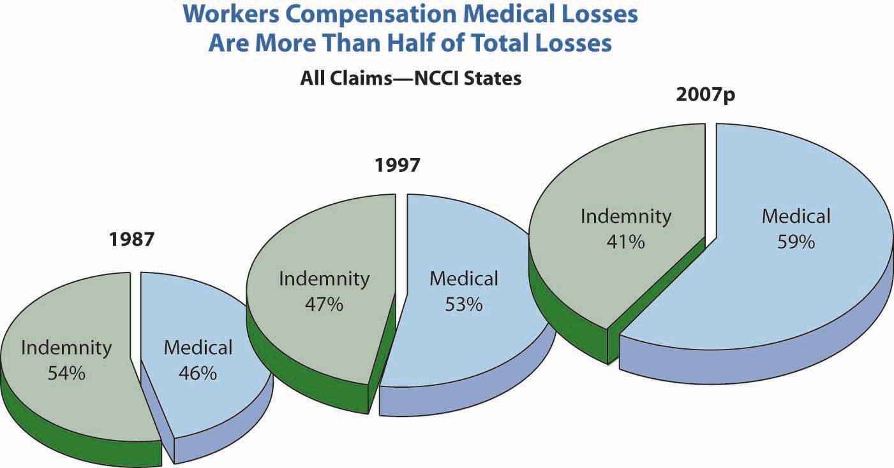
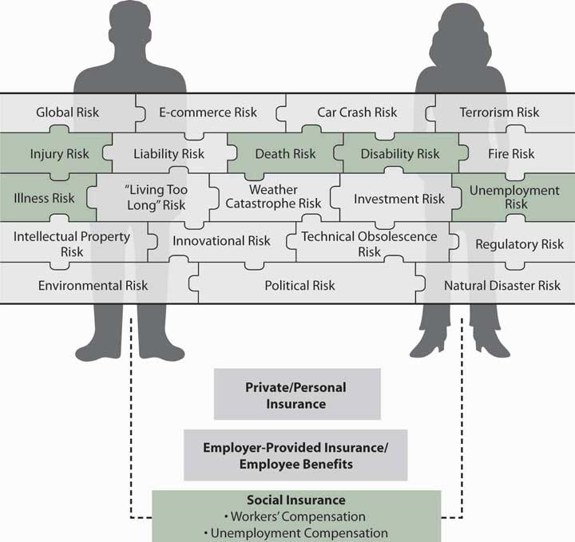

Workers’ compensation is a state-mandated coverage that is exclusively related to the workplace. Unemployment compensation is also a mandated program required of employers. Both are considered social insurance programs, as is Social Security. Social Security is featured in Chapter 18 "Social Security" as a foundation program for employee benefits (covered in Chapter 19 "Mortality Risk Management: Individual Life Insurance and Group Life Insurance" through Chapter 22 "Employment and Individual Health Risk Management"). Social insurance programs are required coverages as a matter of law. The programs are based only on the connection to the labor force, not on need. Both workers’ compensation and unemployment compensation are part of the risk management of businesses in the United States. The use of workers’ compensation as part of an integrated risk program is featured in Case 3 of Chapter 23 "Cases in Holistic Risk Management".
Workers’ compensation was one of the coverages that helped the families who lost their breadwinners in the attacks of September 11, 2001. New York City and the state of New York suffered their largest-ever loss of human lives. Because most of the loss of life occurred while the employees were at work, those injured received medical care, rehabilitation, and disability income under the New York workers’ compensation system, and families of the deceased received survivors’ benefits. The huge payouts raised the question of what would happen to workers’ compensation rates. The National Council on Compensation Insurance (NCCI) predicted a grim outlook then, but by 2005, conditions improved as frequency of losses declined and the industry’s reserves increased.Dennis C. Mealy, FCAS, MAAA, Chief Actuary, NCCI, Inc., “State of the Line,” May 8, 2008; Orlando, Florida, 2008; NCCI Holdings, Inc. The workers’ compensation line has maintained this strong reserve position and has been helped by a continual downward trend in loss frequency. Consequently, the industry reported a combined ratio of 93 percent in 2006 and projects a 99 percent combined ratio for 2007. This indicates positive underwriting results. However, medical claims severity (in contrast to frequency) has continued to grow, as shown in Figure 16.1 "Changes in the Distribution of Medical versus Indemnity Claims in Workers’ Compensation*".
Workers’ compensation is considered a social insurance program. Another social insurance program is the unemployment compensation offered in all the states. This chapter includes a brief explanation of this program as well. To better understand how workers’ compensation and unemployment compensation work, this chapter includes the following:
Figure 16.1 Changes in the Distribution of Medical versus Indemnity Claims in Workers’ Compensation*
* 2007p: Preliminary based on data valued as of December 31, 2007;
1987, 1997: Based on data through December 31, 2006, developed to ultimate;
based on the states where NCCI provides rate-making services, excludes the effects of deductible policies
Source: Dennis C. Mealy, FCAS, MAAA, National Council on Compensation Insurance (NCCI), Inc. Chief Actuary, “State of the Line” Annul Issues Symposium (AIS), May 8, 2008, Accessed March 28, 2009, https://www.ncci.com/documents/AIS-2008-SOL-Complete.pdf. © 2008 NCCI Holdings, Inc. Reproduced with permission.
At this point in our study, we look at the coverage employers provide for you and your family in case you are hurt on the job (workers’ compensation) or lose your job involuntarily (unemployment compensation). As noted above, these coverages are mandatory in most states. Workers’ compensation is not mandatory in New Jersey and Texas (although most employers in these states provide it anyway). In later chapters, you will see the employer-provided group life, health, disability, and pensions as part of noncash compensation programs. These coverages complete important parts of your holistic risk management. You know that, at least for work-related injury, you have protection, and that if you are laid off, limited unemployment compensation is available to you for six months. These coverages are paid completely by the employer; the rates for workers’ compensation are based on your occupational classification.
In some cases, the employer does not purchase workers’ compensation coverage from a private insurer but buys it from a state’s monopolistic fund or self-insures the coverage. For unemployment compensation, the coverage, in most cases, is provided by the states.Exceptions are taxing governmental entities, such as the school districts in Texas, that may be allowed to self-insure unemployment compensation. They have a pool administered by the Texas Association of School Boards. Regardless of the method of obtaining the coverage, you are assured by statutes to receive the benefits.
As with the coverages discussed in Chapter 13 "Multirisk Management Contracts: Homeowners" to Chapter 15 "Multirisk Management Contracts: Business", external market conditions are a very important indication of the cost of coverage to your employer. When rates increase dramatically, many employers will opt to self-insure and use a third-party administrator (TPA) to manage the claims. In workers’ compensation, loss control and safety engineering are important parts of the risk management process. One of the causes of loss is ergonomics, particularly as related to computers. See the box “Should Ergonomic Standards Be Mandatory?” for a discussion. You would like to minimize your injury at work, and your employer is obligated under federal and state laws to secure a safe workplace for you.
Thus, in your pursuit of a holistic risk management program, workers’ compensation coverage is an important piece of the puzzle that completes your risk mitigation. The coverages you receive are only for work-related injuries. What happens if you are injured away from work? This will be discussed in later chapters. One trend is integrated benefits, in which the employer integrates the disability and medical coverages of workers’ compensation with voluntary health and disability insurance. Integrated benefits are part of the effort to provide twenty-four-hour coverage regardless of whether an injury occurred at work or away from work. Currently, nonwork-related injuries are covered for medical procedures by the employer-provided health insurance and for loss of income by group disability insurance. Integrating the benefits is assumed to prevent double dipping (receiving benefits under workers’ compensation and also under health insurance or disability insurance) and to ensure security of coverage regardless of being at work or not. (See the box “Integrated Benefits: The Twenty-Four-Hour Coverage Concept.”) Health and disability coverages are provided voluntarily by your employer, and it is your responsibility to seek individual coverages when the pieces that are offered are insufficient to complete your holistic risk management. Figure 16.2 "Links between Holistic Risk Pieces and Workers’ Compensation and Unemployment Compensation" shows how your holistic risk pieces relate to the risk management parts available under workers’ compensation and unemployment compensation.
Figure 16.2 Links between Holistic Risk Pieces and Workers’ Compensation and Unemployment Compensation
